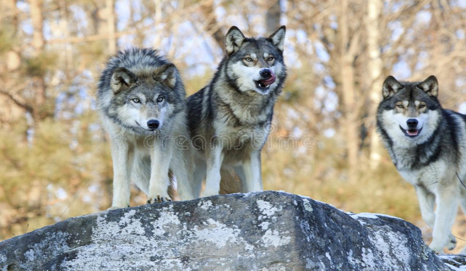
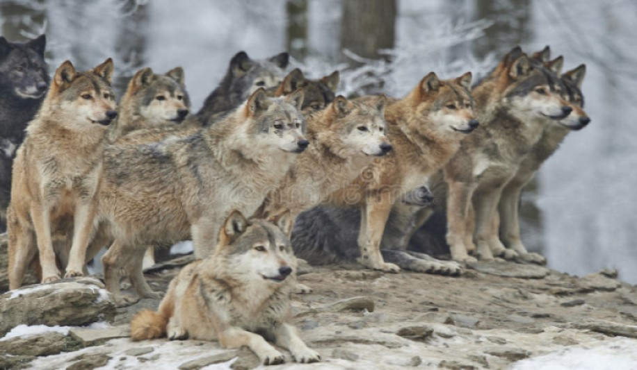

O que São:
Os Lobos são mamíferos que tem como seus semelhantes os cachorros, muitas vezes com os pelos cinzentos ou pretos, são carnívoros residentes do Hemisfério Norte. Possuem uma diversificação na espécie, com outras raças de lobos. Dentre elas, podemos citar o Lobo-Vermelho, o Lobo-Etíope e o Lobo-Guará que iram receber uma melhor explicação mais a frente, os lobos são animais carnívoros, mas algumas outras espécies, se alimentam de frutos. São animais que vivem em grupo e caçam durante a noite, apesar de possuírem hábitos diurnos, sem estes animais desequilíbrios ambientais por falta de predadores para as presas ou para movimentação no campo, desregulam a cadeia alimentar e o ecossistema.

Onde se Encontram:
Se encontram em regiões do Hemisfério Norte, como por exemplo os Estados Unidos, Europa, Ásia e Canadá, são encontrados em zonas e lugares mais selvagens, com uma baixa ou sem uma presença humana, além de se predominarem em zonas mais frias, dando a alguns lobos uma pelagem totalmente branca.